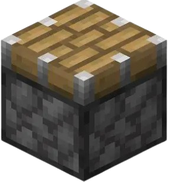

Механики Minecraft
Исследуйте ключевые системы игры — от редстоуна до порталов.


Поршни
Обычный поршень выдвигает блок на 1 клетку при подаче редстоун-сигнала. Используется в дверях, ловушках и механизмах.
Двойной поршень — два поршня, работающие вместе, позволяют перемещать структуры дальше или создавать сложные движения.
Редстоун
Логические цепи, автоматизация, двери, фермы — всё это возможно благодаря редстоуну.
Порталы
Создайте портал в Незер или Энд — ключ к новым мирам, боссам и ресурсам.
Торговля
Обменивайтесь предметами с жителями деревень — получайте редкие вещи и артефакты.